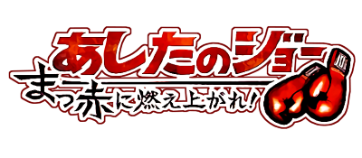

Joe do Amanhã V1
Volume 1, contando o ínicio da jornada de Joe.
Comprar
Ashita no Joe é um mangá de boxe que conta a história do boxeador orfão Joe Yabuki, que encontra seu propósito por meio do boxe, Joe inspirou não só inspirou os mangás battle shonen posteriores com seu espirito inabalavel, como também inspirou uma geração inteira no Japão a continuar acreditando que um amanhã melhor virá se continuarem lutando por ele.
Volume 1, contando o ínicio da jornada de Joe.
Comprar
Volume 2, onde Joe é preso e tem sua paixão por boxe despertada.
Comprar
Volume 3, onde Joe sai da prosão e da inicio a sua carreira profissional no boxe.
Comprar
Volume 4, onde Joe tem sua primeira grande luta e vai subindo em sua carreira.
Comprar